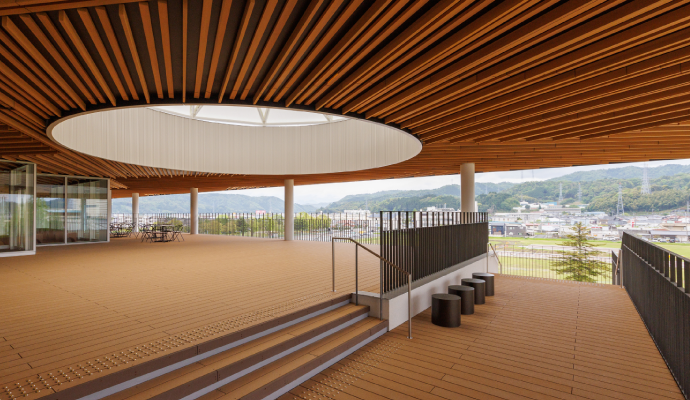

ごあいさつ
当美術館は、東京都に位置しながらも、四季折々の自然が豊かに彩るこの国立市の特別な環境に恵まれています。 桜並木や緑豊かな公園など、都会の喧騒から少し離れたこの地域は、訪れる皆さまに心の安らぎと創造的なひらめきを与えてくれる場所です。 私たちの美術館は、自然と文化が調和するこの土地ならではの芸術体験を提供したいと考えております。国内外の優れた作品はもちろんのこと、 私たちの目指すのは、来館される皆さまがここでの芸術との出会いを通じて、 心に新たな感動とインスピレーションを得られる場を提供することです。 国立市の自然の美しさと、当美術館が誇る多彩な芸術作品を通じて、皆さまの感性を豊かにし、日々の生活に彩りを加えるひとときをお楽しみいただければ幸いです。 皆さまのご来館を心よりお待ちしております。
国立市美術館 館長
美術館について
東京都の一角にありながら、豊かな自然に囲まれた国立市に位置しています。四季折々に変わる風景が美しいこの地域は、 都市の利便性を保ちながらも、静かで落ち着いた空気が流れる場所です。この独特の環境の中で、美術館は自然と調和した芸術の場として、 多くの方々に親しまれています。また、国立市や周辺地域にゆかりのあるアーティストの作品を積極的に紹介し、地域の文化と芸術を支える重要な役割を担っています。 また、私たちはただ作品を鑑賞するだけでなく、訪れる皆さまが芸術を体験し、学び、楽しむことができるよう、さまざまなワークショップやイベントも開催しています。 子供から大人まで、誰もが気軽に参加できるプログラムを通じて、地域のコミュニティとのつながりを深めることを大切にしています。
建築について

当美術館の建物は、著名な建築家・金本芳典氏による設計で、その独特なデザインが訪れる人々に深い印象を与えます。 金本氏は自然との調和を大切にし、地域の特性を活かした建築を手掛けてきたことで知られており、この美術館もその哲学が息づいています。 美術館は、二階建てのゆったりとした構造で、訪れる方々が自然の光や風を感じながら芸術を鑑賞できるよう工夫されています。 特にエントランスホールは、天井が高く開放感あふれる吹き抜け構造となっており、入館した瞬間から広々とした空間の中で芸術に触れる期待感が高まります。 この吹き抜け部分には、ガラス張りの大きな窓が配されており、自然光が降り注ぐ設計となっています。これにより、時間帯や季節ごとに異なる光の表情が建物全体に彩りを与え、 訪れるたびに新たな印象をもたらします。